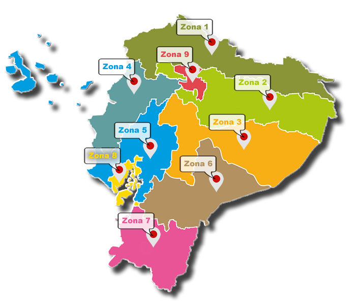

Farmacias de Turno 2022
Conoce las farmacias de turno en tu ciudad las 24 horas, localiza una farmacia por las noches en cualquier parte del Ecuador y pregunta la disponibilidad del medicamento que necesitas.
Zonas de Planificación de Ecuador
